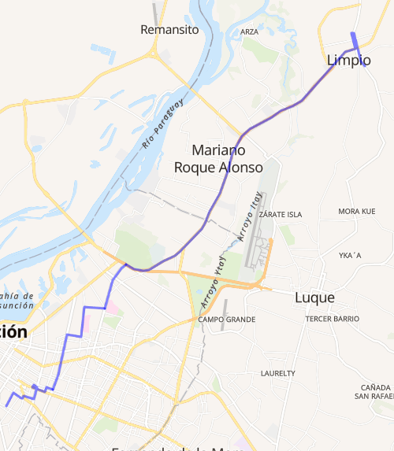

🚌 Información General
La Línea 34 es operada por Ciudad de Limpio S.R.L, conectando la ciudad de Limpio con Asunción.
📍 Recorrido
- B° San José
- Ruta Limpio
- Madame Lynch
- Microcentro de Asunción
- Terminal de Ómnibus
- Av. Eusebio Ayala (Hospital de Trauma)
- Av. Carlos A. López
🧭 Ramales y Rutas
Piquete Cué – Asunción
Inicio: Comisaría Villa Madrid
Fin: Av. Pozo Favorito
Duración: 79 min

Villa Madrid – Asunción
Inicio: Av. Carlos A. López
Fin: Senador Velázquez
Duración: 81 min
Don Bosco – Asunción
Inicio: Centro Educativo Niño Jesús Nº5
Fin: Pozo Favorito 1498
Colonia Juan de Salazar – Asunción
Inicio: Fernando Magallanes
Fin: Pozo Favorito 1498
Salado – Asunción
Ruta alternativa con paradas intermedias
⏰ Horarios
- Servicio diario (lunes a domingo)
- Horario general: 24 horas
- Frecuencia: cada 10 a 15 minutos
- Duración: 79 a 93 minutos
💵 Tarifas
- General: Gs. 3.400
- Estudiantil: Gs. 1.800
- Diferenciada: Gs. 2.300
- Interurbana: Variable
📍 Ubicación de la Terminal
Podés encontrar la terminal principal de la Línea 34 en Limpio: